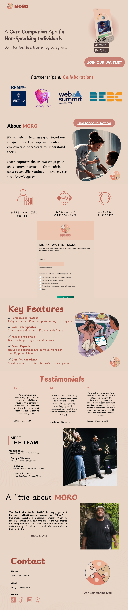
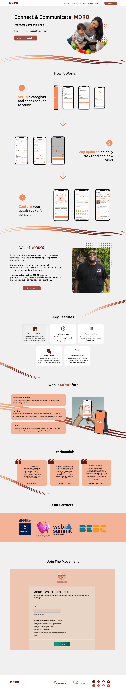

Phase 01: Strategic UX Redesign (Figma)
The goal wasn't just a new look, but a better experience. I performed a heuristic evaluation of the legacy site to identify what worked.
By maintaining the familiar structural layout that existing users relied on, I was able to focus on UX best practices: improving information architecture, optimizing button accessibility, and creating a more intuitive visual hierarchy.
Before

After

The Challenge: The initial handoff revealed that the client needed a way for their marketing team to edit seasonal content without touching a single line of code.